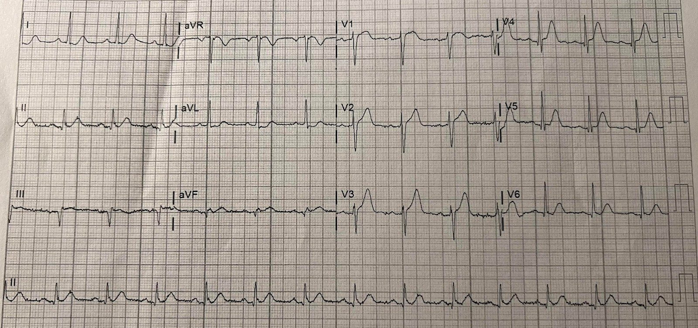
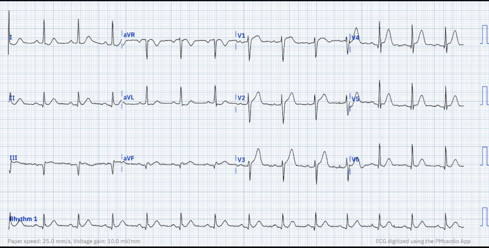
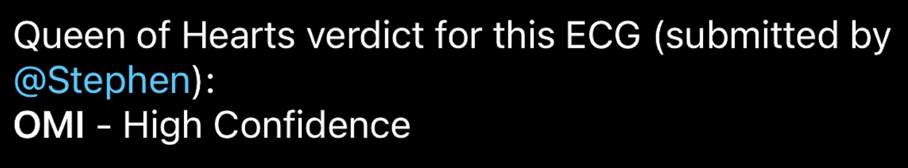
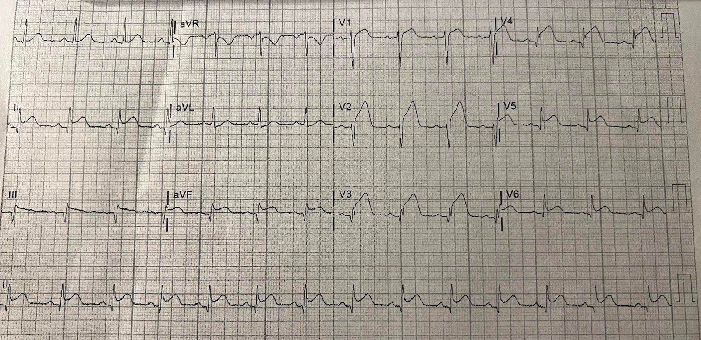
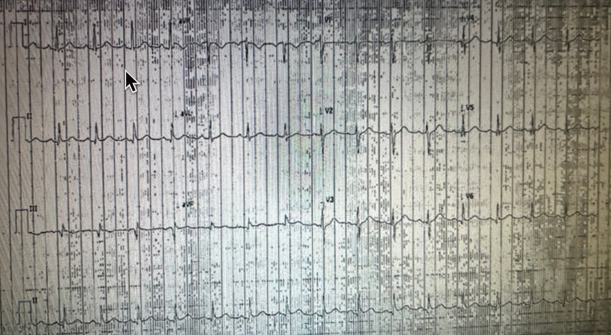
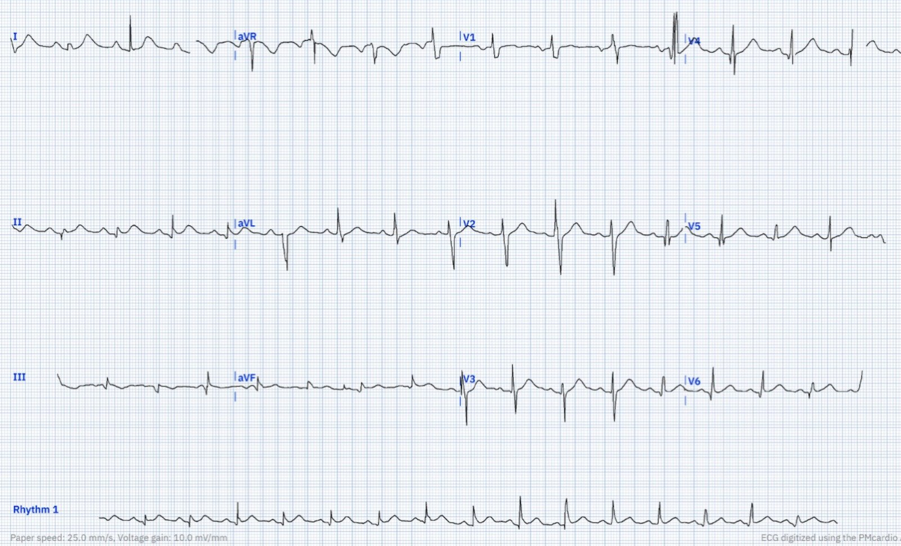
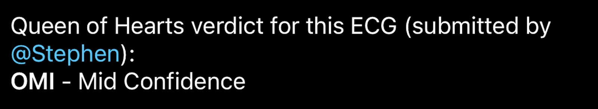
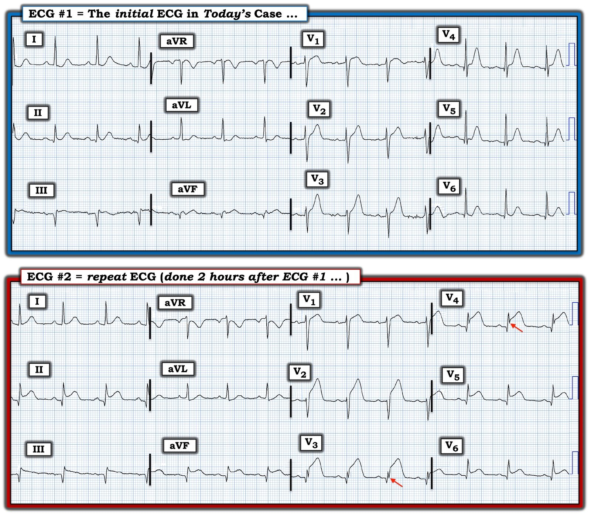

31/03/2023 — Một bệnh nhân ngoài 50 tuổi đau ngực: làm gì? Và hãy tải ứng dụng PM Cardio để tự dùng tại đây!
Bản dịch tiếng Việt của bài "A 50-something with chest pain. what to do? And get the PM Cardio app for your own use here!" – Dr. Smith’s ECG Blog. Giữ nguyên toàn bộ 9 hình ảnh của bản gốc.
Một người bạn đã gửi ca này cho tôi.
Bệnh nhân ngoài 50 tuổi, đau ngực:


Bạn nghĩ gì?
Ca này được các bác sĩ đánh giá là “Không phải STEMI”.
Đây không phải STEMI, nhưng có giá trị chẩn đoán OMI do tắc LAD (nhồi máu cơ tim do tắc). Có ST chênh lên kín đáo ở V1-V4 và sóng T tối cấp ở V2-V6.
Cũng có ST chênh lên ở thành DƯỚI, kín đáo nhưng có giá trị chẩn đoán, kèm ST chênh xuống soi gương ở aVL.
Tôi đã tải bản ghi này lên ứng dụng PM Cardio AI Bot mới của chúng tôi.
Chúng tôi gọi ứng dụng này là “Queen of Hearts”
Trước tiên, ứng dụng chuyển ảnh thành tệp số và chuẩn hóa hình ảnh. Đây là kết quả:


Tiếp theo, ứng dụng diễn giải dữ liệu số:


Một kết quả diễn giải hoàn hảo
Đáng tiếc, điện tâm đồ này không được diễn giải là OMI và bệnh nhân không được ghi thêm điện tâm đồ nào cho đến 2 giờ sau.
Đây là bản ghi đó:


Không ai có thể bỏ sót bản ghi này.
Như vậy, bệnh nhân này bị chậm can thiệp thêm 2 giờ, và mất đi rất nhiều cơ tim.
BẠN CŨNG CÓ THỂ CÓ BOT NÀY!! (ỨNG DỤNG AI OMI PM CARDIO)
Nếu bạn muốn bot này giúp bạn chẩn đoán sớm OMI và cứu bệnh nhân cùng cơ tim của họ, bạn có thể nhận phiên bản beta của bot tại đây:
https://share-eu1.hsforms.com/18cAH0ZK0RoiVG3RjC5dYdwfyfsg (biểu mẫu đăng ký nhận bản beta)
Chúng tôi sắp nộp bản thảo nghiên cứu về độ chính xác của AI này trong chẩn đoán OMI. Kết quả thật đáng kinh ngạc, rồi bạn sẽ thấy!
Ngay trước khi đăng bài này, tôi nhận được điện tâm đồ dưới đây, là bản ghi đầu tiên trong ngày tại khu phân loại (triage) lúc bệnh nhân đến viện, sớm hơn 70 phút so với điện tâm đồ đầu tiên ở trên:


Được thuật toán thông thường và bác sĩ diễn giải là “Bình thường”
Đây là bản chuyển đổi bằng PM Cardio của điện tâm đồ trên (chỉ đơn giản bằng cách dùng iPhone chụp ảnh điện tâm đồ trên màn hình!!)


Bản ghi này chắc chắn không bình thường.
Có sóng Q ở V4 và chuyển đạo III.
Có sóng T tối cấp ở V3, V4.
Bản ghi này gần như có giá trị chẩn đoán OMI do tắc LAD, nhưng RẤT khó nhận ra
Và kết quả diễn giải của PM Cardio Bot:


Thật đáng kinh ngạc!!
Thường thì, khi tôi nói một điện tâm đồ có giá trị chẩn đoán OMI, những người ít nhạy bén với các chi tiết tinh tế khi đọc điện tâm đồ OMI sẽ phản đối và nói rằng nó “không đặc hiệu”. Tôi bảo họ rằng không phải điện tâm đồ không đặc hiệu, mà là người đọc không đặc hiệu.
Tương tự, PM Cardio Bot sẽ đưa ra một số nhận định mà các bác sĩ đơn giản là không tin.
Nhưng hãy cẩn trọng khi nó đưa ra những nhận định này. Nó giỏi ngang hoặc giỏi hơn bất kỳ con người nào.
Cuối cùng, dù thế nào đi nữa, ghi các điện tâm đồ liên tiếp thường xuyên luôn đáng làm, dù dùng bot sẽ cho câu trả lời nhanh hơn.

==================================
BÌNH LUẬN CỦA TÔI, bởi KEN GRAUER, MD (31/3/2023):
==================================
Máy tính là những cỗ máy tuyệt vời. Chúng đã thực sự làm thay đổi cách sống của chúng ta — tiến hóa từ những phiên bản ban đầu (mà thời tôi học đại học thì chiếm trọn cả một căn phòng theo đúng nghĩa đen — phụ thuộc vào các kỹ thuật viên gõ những lệnh Fortran phức tạp) — đến những phiên bản hiện nay ngày càng nhỏ gọn và thân thiện với người dùng hơn.
- Tôi bắt đầu quan tâm đến việc đọc điện tâm đồ bằng máy tính từ đầu sự nghiệp học thuật của mình vào đầu những năm 1980 (Một số công trình của tôi được dẫn ở phần dưới — vì tôi tin rằng có lẽ tôi là bác sĩ gia đình đầu tiên công bố nghiên cứu trong lĩnh vực này).
- Như mọi chức năng của máy tính — bản thân cỗ máy thật tuyệt vời — nhưng độ chính xác của kết quả đọc điện tâm đồ bằng máy tính chỉ tốt ngang với dữ liệu được nạp vào chương trình máy tính. “Sự cân bằng” luôn nằm ở chỗ nên tăng độ nhạy phát hiện các tình trạng tim cấp tính đến mức nào — so với — mức giảm độ đặc hiệu do việc tăng độ nhạy đó gây ra có thể chấp nhận được tới đâu.
Đọc điện tâm đồ bằng máy tính trong Y học Cấp cứu năm 2023:
Về lợi ích của việc đọc điện tâm đồ bằng máy tính trong chăm sóc cấp cứu — Mọi thứ gần đây đã thay đổi! Sự tiến hóa không ngừng của các ứng dụng AI (trí tuệ nhân tạo — Artificial Intelligence) ngày càng tinh vi — và đặc biệt là cách máy tính hiện được lập trình để diễn giải các tình trạng cấp tính trên điện tâm đồ — đã là một “bước ngoặt” (game-changer).
- 2 lĩnh vực lâm sàng có tiềm năng hưởng lợi nhiều nhất cho chăm sóc cấp cứu từ kết quả đọc bằng máy tính là: i) Rối loạn nhịp tim; và, ii) Phát hiện nhanh tắc mạch vành cấp — Occlusion (tức là, phát hiện OMI cấp) trong những ca không có tiêu chuẩn STEMI dễ nhận biết.
- Theo tôi — AI chưa thực sự “đạt tới” trong việc diễn giải các rối loạn nhịp tim phức tạp …
- Dù vậy — những người theo dõi Dr. Smith’s ECG Blog đã thấy nhiều ca lâm sàng chúng tôi trình bày, trong đó ứng dụng PM Cardio AI Bot đã vượt trội nhiều bác sĩ tim mạch về khả năng nhận ra với “độ tin cậy cao” các OMI cấp từ những điện tâm đồ không thỏa tiêu chuẩn STEMI.
LƯU Ý: Có lý do khiến ứng dụng PM Cardio AI Bot hoạt động tốt như vậy trên lâm sàng: Nó được lập trình dựa trên các tiêu chuẩn điện tâm đồ do các bác sĩ Meyers, Weingart và Smith đưa ra trong OMI Manifesto (Tuyên ngôn OMI) năm 2018 của họ.
- Cho đến gần đây — mọi chương trình đọc điện tâm đồ bằng máy tính mà tôi biết đều dùng tiêu chuẩn STEMI chuẩn dựa trên milimét làm cơ sở để xác định bệnh nhân đau ngực nào “đủ điều kiện” được thông tim sớm kèm PCI. Vấn đề của cách tiếp cận này — là ít nhất 25-30% các ca tắc mạch vành cấp bị bỏ sót do bám vào cách tiếp cận theo tiêu chuẩn STEMI cũ (và nay đã lỗi thời) (Xem Bình luận của tôi ở bài ngày 31 tháng Bảy năm 2020 trên Dr. Smith’s ECG Blog).
- Như được ghi nhận qua số ca ngày càng nhiều mà chúng tôi gặp (và các ca được gửi đến từ khắp thế giới) — ứng dụng “Queen of Hearts” mà Dr. Smith nhắc ở trên đã chính xác đến kinh ngạc trong việc nhận ra các OMI cấp cần thông tim sớm — thường là từ rất lâu trước khi các bác sĩ tim mạch được hội chẩn bị thuyết phục về chẩn đoán. Ca hôm nay chỉ là một ví dụ như vậy.
- Nhưng dù ứng dụng “Queen of Hearts” đã tốt đến vậy — nó vẫn tiếp tục tốt hơn nữa. Đó là vì ngày càng nhiều dữ liệu về các ca tắc mạch vành cấp đã được chứng minh qua thông tim được nạp vào chương trình, nhờ đó liên tục nâng cao độ tinh vi và độ chính xác của chương trình.
Những điểm cần học từ CA BỆNH hôm nay:
Để rõ ràng và dễ so sánh — tôi đã đặt 2 điện tâm đồ của ca hôm nay cạnh nhau trong Hình 1.
- Như Dr. Smith đã nêu — Không ai có thể bỏ sót STEMI cấp trên điện tâm đồ ghi lại trong ca hôm nay. Chúng ta phải hỏi TẠI SAO phải mất 2 giờ mới ghi lại điện tâm đồ? Ngay cả khi bác sĩ can thiệp mà bạn làm việc cùng chưa bị thuyết phục rằng điện tâm đồ ban đầu đã thỏa chỉ định thông tim cấp — trong đa số trường hợp, các điện tâm đồ liên tiếp ghi lại thường xuyên, tới mức mỗi 15-30 phút, cho đến khi có câu trả lời rõ ràng sẽ xác lập chẩn đoán OMI cấp từ rất lâu trước mốc 2 giờ như trong ca hôm nay.
- Điểm cần học: Các mũi tên ĐỎ ở chuyển đạo V3,V4 của điện tâm đồ #2 là một ví dụ tuyệt vời về biến dạng phần cuối QRS — Terminal QRS Distortion (T-QRS-D). Mặc dù rõ ràng không cần T-QRS-D để chẩn đoán STEMI trên điện tâm đồ #2 — việc nhận biết dấu hiệu điện tâm đồ quan trọng này, khi đôi lúc gặp, có thể hỗ trợ vô giá để phân biệt giữa tái cực sớm với OMI cấp (Xem Bình luận của tôi ở bài ngày 14 tháng Mười Một năm 2019 trên Dr. Smith’s ECG Blog).
Còn điện tâm đồ ban đầu thì sao?
Điểm thứ 1 cần nhấn mạnh về điện tâm đồ ban đầu trong ca hôm nay — là nó được ghi từ một bệnh nhân đến khoa cấp cứu (ED) vì đau ngực mới xuất hiện. Riêng bệnh sử này đã ngay lập tức xếp bệnh nhân hôm nay vào nhóm “tỷ lệ hiện mắc cao hơn” đối với một biến cố cấp. Vai trò của chúng ta lập tức trở thành phải loại trừ một biến cố tim cấp (thay vì phải “khẳng định” nó ).
- Tôi thích bắt đầu đánh giá điện tâm đồ ở bệnh nhân đau ngực mới bằng cách tìm ít nhất 1 hoặc 2 chuyển đạo mà tôi biết chắc chắn là bất thường. Ở một bệnh nhân đau ngực mới — không thể nào ST-T ở chuyển đạo V3 lại bình thường. Ngoài ST chênh lên kín đáo — sóng T ở chuyển đạo V3 rõ ràng không tương xứng với biên độ QRS ở chuyển đạo này (tức là, Sóng T này là tối cấp — nhận ra nhờ nó cao hơn nhiều so với dự kiến, đồng thời “mập” hơn ở đỉnh và rộng hơn ở đáy so với dự kiến khi xét biên độ QRS ở chuyển đạo này).
- Biết rằng ST-T ở chuyển đạo V3 chắc chắn bất thường — giúp dễ nhận ra rằng sóng T ở các chuyển đạo lân cận V2 và V4,V5 cũng tối cấp (tức là, “quá đầy đặn” (hypervoluminous) so với kích thước QRS ở các chuyển đạo này).
- Điểm cần học: Hãy chú ý hình dạng của đoạn ST ngắn ở chuyển đạo V4,V5,V6 trước đoạn dốc lên đứng của sóng T ở các chuyển đạo này. Hình dạng đoạn ST ngắn này rõ ràng là bất thường! Lưu ý rằng đoạn ST ngắn này thẳng đuỗn ở V4 — nằm ngang ở V5 — và dốc xuống ở chuyển đạo V6. Với tôi — điều này khẳng định tính cấp tính của ST-T ở các chuyển đạo này.
- Điểm cần học: ST chênh lên dạng vòm (coving) ở chuyển đạo V1 rõ ràng bất thường! Mặc dù ST chênh lên rất nhẹ đôi khi là dấu hiệu bình thường ở chuyển đạo V1 — ở bệnh nhân có QRS hẹp và không có LVH — bạn không nên thấy ST dạng vòm với mức ST chênh lên như ở chuyển đạo V1 của điện tâm đồ #1.
- Tôi kém chắc chắn hơn về các thay đổi QRST ở chuyển đạo chi của điện tâm đồ #1. Tôi nghĩ sóng Q rất sâu và rộng ở chuyển đạo III có thể là biểu hiện của nhồi máu thành dưới cũ — nhất là khi ST chênh lên ở chuyển đạo này tương đối khiêm tốn. Sóng Q cũng có ở chuyển đạo II và aVF. Và khi xét kích thước QRS rất nhỏ ở chuyển đạo aVF — ST-T ở chuyển đạo này rõ ràng có thể phản ánh một biến cố cấp (ST chênh xuống soi gương ở chuyển đạo aVL cũng vậy). Dù vậy — ban đầu tôi không chắc liệu nhồi máu thành dưới là mới — cũ — hay mới chồng lên một nhồi máu thành dưới trước đó.
- ĐIỀU CỐT LÕI: Như Dr. Smith nhận định, ở bệnh nhân đau ngực mới này — điện tâm đồ #1 rõ ràng có giá trị chẩn đoán OMI do tắc LAD cấp. Dù có kèm nhồi máu thành dưới cấp đang diễn ra hay không thì cũng không hề thay đổi xử trí hay làm giảm nhu cầu thông tim sớm.
Những điểm cần học: Tôi thấy thú vị khi so sánh điện tâm đồ ghi lại với bản ghi ban đầu của ca hôm nay.
- Biến cố cấp ở thành dưới bộc lộ rõ trên bản ghi lại! Vì vậy khi nhìn lại — các dấu hiệu ST-T ở chuyển đạo chi của điện tâm đồ #1 quả thật đã là cấp tính.
- Ngay cả khi không có lợi thế của các điện tâm đồ liên tiếp trong 2 giờ kể từ khi ghi điện tâm đồ #1 — chúng ta có thể thấy các sóng T tối cấp ở chuyển đạo ngực (cũng như những đoạn ST ngắn có hình dạng bất thường ở V4,V5,V6) đã báo trước cho ST chênh lên kiểu STEMI dữ dội sau đó.
- Dễ hình dung ST chênh lên đang tiến triển ở chuyển đạo ngực này “nâng” sóng S lên trên đường nền ở chuyển đạo V3,V4 để tạo ra T-QRS-D.
Lời nhắc CUỐI CÙNG: Dù ứng dụng “Queen of Hearts” tuyệt vời đến đâu — nó vẫn là một “công cụ” cần được sử dụng bởi một bác sĩ lâm sàng biết suy xét. Ứng dụng này không hoàn hảo — vì vậy mọi bản ghi vẫn cần được một bác sĩ lâm sàng là con người đọc lại (overread). Dù vậy — công nghệ tuyệt vời này đã là một công cụ hỗ trợ vô giá để học hỏi — có thể giúp nhận ra nhanh hơn nhiều các OMI cấp không kèm ST chênh lên rõ rệt.


========================================
Các công trình của tôi về đọc điện tâm đồ bằng máy tính từ những năm đầu sự nghiệp học thuật gồm:
- Grauer K: Chương 21 — Does the Computer Know Better? — trong Grauer K: Practical Guide to ECG Interpretation (tái bản lần 2) — Mosby, St. Louis, 1998, trang 374-379.
- Grauer K, Kravitz L, Ariet M, Curry RW, Nelson WP, Marriott HJL: Potential Benefits of a Computer ECG Interpretation System for Primary Care Physicians in a Community Hospital. J Am Bd Fam Prac 1:17-24, 1989.
- Grauer K, Kravitz L, Curry RW, Ariet M: Computerized Electrocardiogram Interpretations: Are They Useful for the Family Physician? J Fam Prac 24:39-43, 1987.
- Grauer K, Curry RW: Chương 11: Use of Computerized ECG Interpretation Programs — trong Clinical Electrocardiography (Grauer & Curry) — Blackwell Scientific Publications, Boston, 1992, trang 418-425.